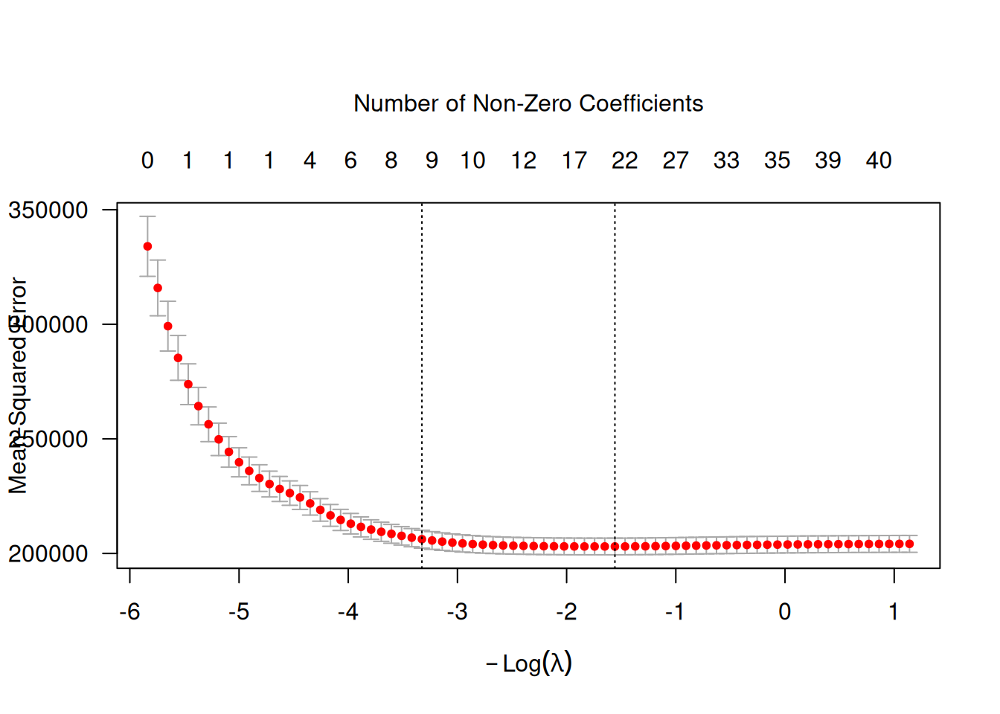
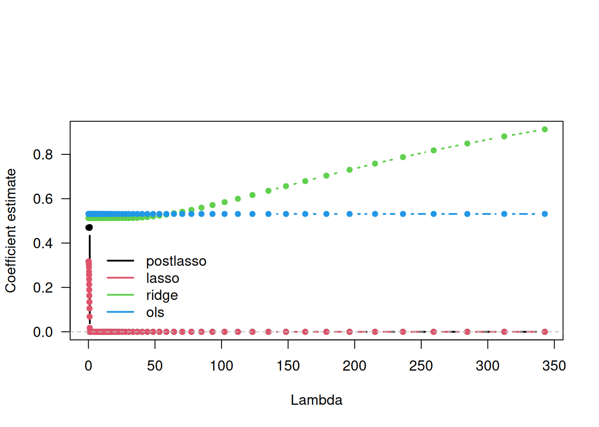
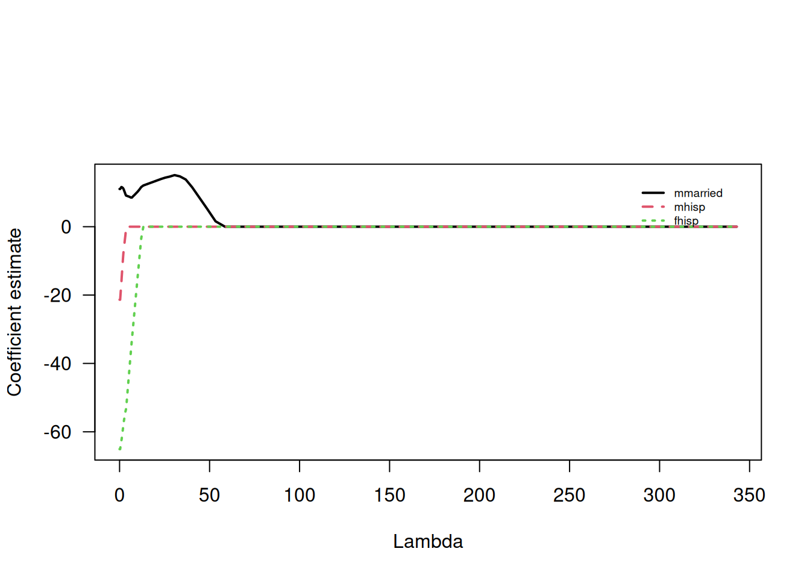
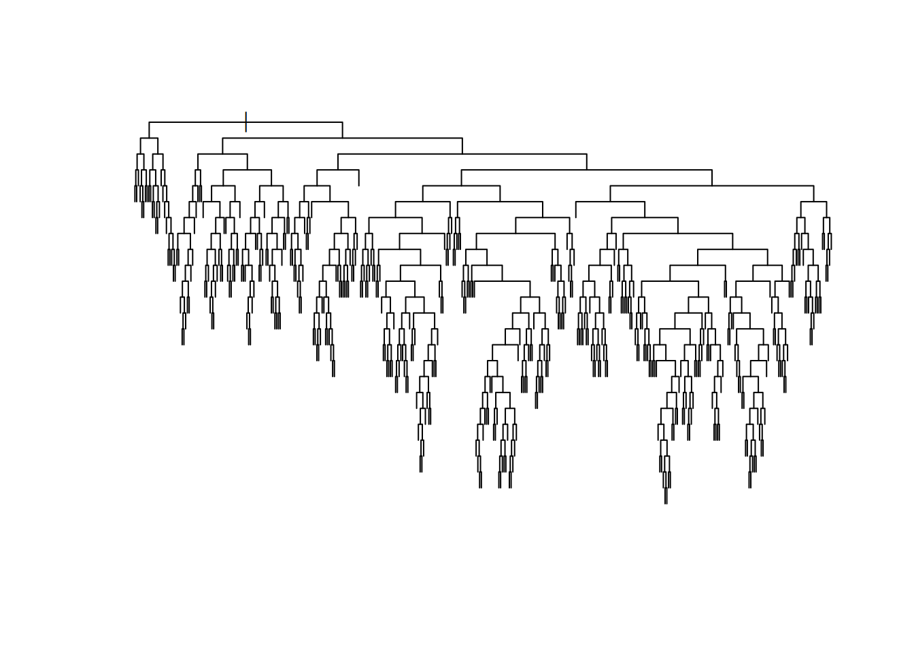
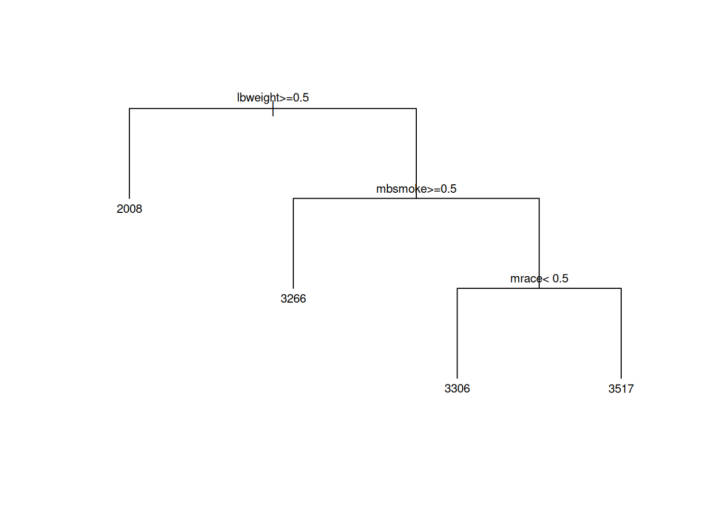

# load dataset
data <- read_dta(file="https://www.stata-press.com/data/r18/cattaneo2.dta")
# outcome variable name
outcome <- "bweight"
# covariates
true.covariates <- c("mmarried","mhisp","fhisp","foreign","alcohol","deadkids","mage","medu","fage","fedu","nprenatal","monthslb","order", "msmoke","mbsmoke","mrace","frace","prenatal","birthmonth","lbweight","fbaby","prenatal1")
p.true <- length(true.covariates)
# noise covariates added for didactic reasons
p.noise <- 20
noise.covariates <- paste0('noise', seq(p.noise))
covariates <- c(true.covariates, noise.covariates)
X.noise <- matrix(rnorm(n=nrow(data)*p.noise), nrow(data), p.noise)
colnames(X.noise) <- noise.covariates
data <- cbind(data, X.noise)
# sample size
n <- nrow(data)
# total number of covariates
p <- length(covariates)3 Machine Learning for Causal Inference
This chapter introduces machine learning methods relevant to causal inference: penalized regression, trees, and forests. These methods are used both as standalone prediction tools and as building blocks for the causal estimators in later chapters.
3.1 Regression and Penalized Regression
library(glmnet)
fmla <- formula(paste(" ~ 0 + ", paste0(covariates, collapse=" + ")))
XX <- model.matrix(fmla, data)
Y <- data[, outcome]
# Fit a lasso model.
# Note this automatically performs cross-validation.
lasso <- cv.glmnet(
x=XX, y=Y,
family="gaussian", # use 'binomial' for logistic regression
alpha=1. # use alpha=0 for ridge, or alpha in (0, 1) for elastic net
)
par(oma=c(0,0,3,0))
plot(lasso, las=1)
mtext('Number of Non-Zero Coefficients', side=3, line = 3)
# prepare data
fmla <- formula(paste0(outcome, "~", paste0(covariates, collapse="+")))
XX <- model.matrix(fmla, data)[,-1] # [,-1] drops the intercept
Y <- data[,outcome]
# fit ols, lasso and ridge models
ols <- lm(fmla, data)
lasso <- cv.glmnet(x=XX, y=Y, alpha=1.) # alpha = 1 for lasso
ridge <- cv.glmnet(x=XX, y=Y, alpha=0.) # alpha = 0 for ridge
# retrieve ols, lasso and ridge coefficients
lambda.grid <- c(0, sort(lasso$lambda))
ols.coefs <- coef(ols)
lasso.coefs <- as.matrix(coef(lasso, s=lambda.grid))
ridge.coefs <- as.matrix(coef(ridge, s=lambda.grid))
# loop over lasso coefficients and re-fit OLS to get post-lasso coefficients
plasso.coefs <- apply(lasso.coefs, 2, function(beta) {
# which slopes are non-zero
non.zero <- which(beta[-1] != 0) # [-1] excludes intercept
# if there are any non zero coefficients, estimate OLS
fmla <- formula(paste0(outcome, "~", paste0(c("1", covariates[non.zero]), collapse="+")))
beta <- rep(0, ncol(XX) + 1)
# populate post-lasso coefficients
beta[c(1, non.zero + 1)] <- coef(lm(fmla, data))
beta
})
selected <- 'mage'
k <- which(rownames(lasso.coefs) == selected) # index of coefficient to plot
coefs <- cbind(postlasso=plasso.coefs[k,], lasso=lasso.coefs[k,], ridge=ridge.coefs[k,], ols=ols.coefs[k])
matplot(lambda.grid, coefs, col=1:4, type="b", pch=20, lwd=2, las=1, xlab="Lambda", ylab="Coefficient estimate")
abline(h = 0, lty="dashed", col="gray")
legend("bottomleft",
legend = colnames(coefs),
bty="n", col=1:4, inset=c(.05, .05), lwd=2)

3.2 Tree

# Retrieves the optimal parameter
cp.min <- which.min(tree$cptable[,"xerror"]) # minimum error
cp.idx <- which(tree$cptable[,"xerror"] - tree$cptable[cp.min,"xerror"] < tree$cptable[,"xstd"])[1] # at most one std. error from minimum error
cp.best <- tree$cptable[cp.idx,"CP"]
# Prune the tree
pruned.tree <- prune(tree, cp=cp.best)
plot(pruned.tree, uniform=TRUE, margin = .05)
text(pruned.tree, cex=.7)
3.3 Forest
X <- data[,covariates]
Y <- as.vector(data$bweight)
# Fitting the forest
# We'll use few trees for speed here.
# In a practical application please use a higher number of trees.
forest <- regression_forest(X=X, Y=Y, num.trees=200)
# There usually isn't a lot of benefit in tuning forest parameters, but the next code does so automatically (expect longer training times)
# forest <- regression_forest(X=X, Y=Y, tune.parameters="all")
# Retrieving forest predictions
y.hat <- predict(forest)$predictions
# Evaluation (out-of-bag mse)
mse.oob <- mean(predict(forest)$debiased.error)
print(paste("Forest MSE (out-of-bag):", mse.oob))[1] "Forest MSE (out-of-bag): 203738.024947331" lbweight nprenatal msmoke mrace mbsmoke frace
0.476876242 0.174079728 0.066249201 0.057619894 0.047567523 0.029784236
mmarried mage noise15 noise6
0.021313644 0.008727242 0.007568319 0.007050859